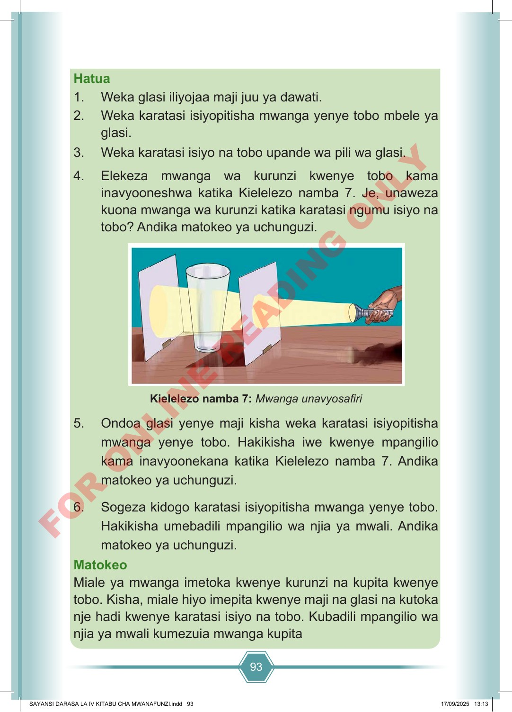

93 Hatua 1. Weka glasi iliyojaa maji juu ya dawati. 2. Weka karatasi isiyopitisha mwanga yenye tobo mbele ya glasi. 3. Weka karatasi isiyo na tobo upande wa pili wa glasi. 4. Elekeza mwanga wa kurunzi kwenye tobo kama inavyooneshwa katika Kielelezo namba 7. Je, unaweza kuona mwanga wa kurunzi katika karatasi ngumu isiyo na tobo? Andika matokeo ya uchunguzi. Kielelezo namba 7: Mwanga unavyosafiri 5. Ondoa glasi yenye maji kisha weka karatasi isiyopitisha mwanga yenye tobo. Hakikisha iwe kwenye mpangilio kama inavyoonekana katika Kielelezo namba 7. Andika matokeo ya uchunguzi. 6. Sogeza kidogo karatasi isiyopitisha mwanga yenye tobo. Hakikisha umebadili mpangilio wa njia ya mwali. Andika matokeo ya uchunguzi. Matokeo Miale ya mwanga imetoka kwenye kurunzi na kupita kwenye tobo. Kisha, miale hiyo imepita kwenye maji na glasi na kutoka nje hadi kwenye karatasi isiyo na tobo. Kubadili mpangilio wa njia ya mwali kumezuia mwanga kupita SAYANSI DARASA LA IV KITABU CHA MWANAFUNZI.indd 93 SAYANSI DARASA LA IV KITABU CHA MWANAFUNZI.indd 93 17/09/2025 13:13 17/09/2025 13:13 F O R O N L I N E R E A D I N G O N L Y